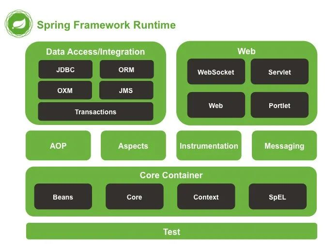
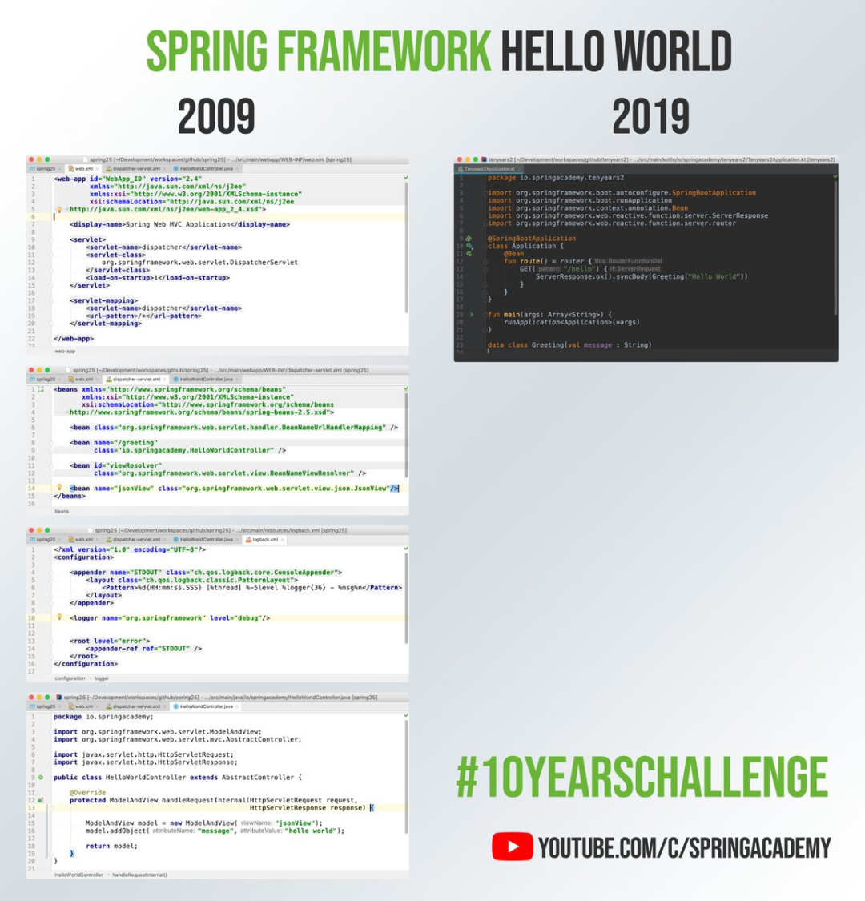
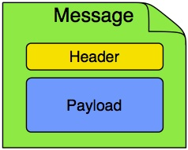
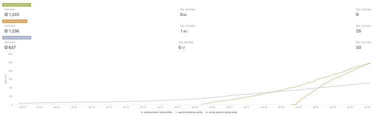
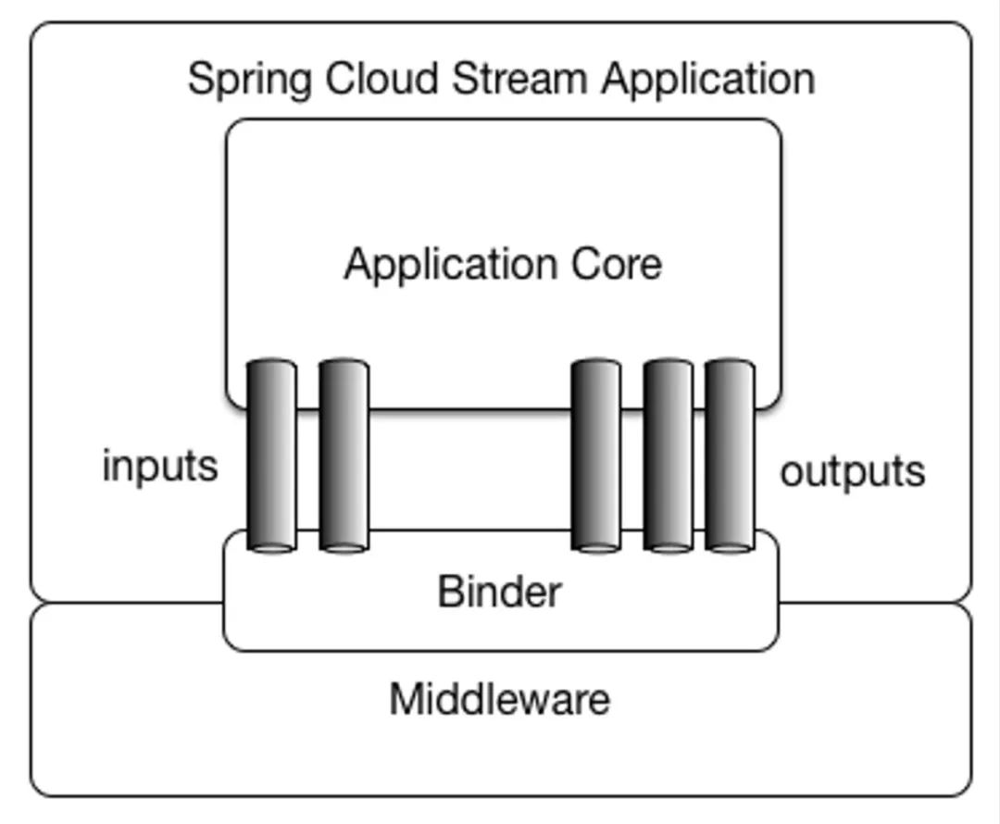
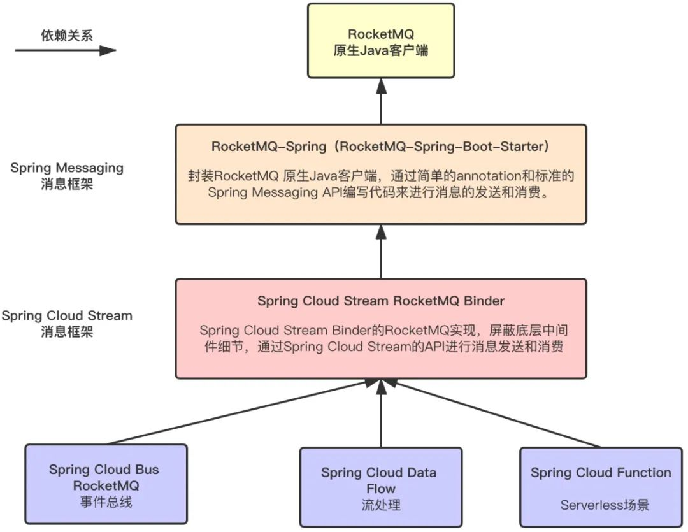

RocketMQ作为业务消息的首选，在消息和流处理领域被广泛应用。而微服务生态Spring框架也是业务开发中最受欢迎的框架，两者的完美契合使得RocketMQ成为Spring Messaging实现中最受欢迎的消息实现。本文展示了5种在Spring生态中文玩转RocketMQ的方式，并描述了每个项目的特点和使用场景。文末可以直达在线体验。
一 前言
上世纪90年代末，随着Java EE(Enterprise Edition)的出现，特别是Enterprise Java Beans的使用需要复杂的描述符配置和死板复杂的代码实现，增加了广大开发者的学习曲线和开发成本，由此基于简单的XML配置和普通Java对象(Plain Old Java Objects)的Spring技术应运而生，依赖注入(Dependency Injection), 控制反转(Inversion of Control)和面向切面编程(AOP)的技术更加敏捷地解决了传统Java企业及版本的不足。随着Spring的持续演进，基于注解(Annotation)的配置逐渐取代了XML文件配置。除了依赖注入、控制翻转、AOP这些技术，Spring后续衍生出AMQP、Transactional、Security、Batch、Data Access等模块，涉及开发的各个领域。

2014年4月1日，Spring Boot 1.0.0正式发布。它基于“约定大于配置”（Convention over configuration)这一理念来快速地开发，测试，运行和部署Spring应用，并能通过简单地与各种启动器(如spring-boot-web-starter)结合，让应用直接以命令行的方式运行，不需再部署到独立容器中。Spring Boot的出现可以说是Spring框架的第二春，它不但简化了开发的流程，目前更是事实标准。下面这幅图可以看出相同功能的Spring和Spring Boot的代码实现对比。

Apache RocketMQ是一款是业界知名的分布式消息和流处理中间件，它主要功能是消息分发、异步解耦、削峰填谷等。RocketMQ是一款金融级消息及流数据平台，RocketMQ在交易、支付链路上用的很多，主要是对消息链路质量要求非常高的场景，能够支持万亿级消息洪峰。RocketMQ在业务消息中被广泛应用，并衍生出顺序消息、事务消息、延迟消息等匹配各类业务场景的特殊消息。
本文的主角就是Spring和RocketMQ，那几乎每个Java程序员都会使用Spring框架与支持丰富业务场景的RocketMQ会碰撞出怎么样的火花？
二 RocketMQ与Spring的碰撞
在介绍RocketMQ与Spring故事之前，不得不提到Spring中的两个关于消息的框架，Spring Messaging和Spring Cloud Stream。它们都能够与Spring Boot整合并提供了一些参考的实现。和所有的实现框架一样，消息框架的目的是实现轻量级的消息驱动的微服务，可以有效地简化开发人员对消息中间件的使用复杂度，让系统开发人员可以有更多的精力关注于核心业务逻辑的处理。
1 Spring Messaging
Spring Messaging是Spring Framework 4中添加的模块，是Spring与消息系统集成的一个扩展性的支持。它实现了从基于JmsTemplate的简单的使用JMS接口到异步接收消息的一整套完整的基础架构，Spring AMQP提供了该协议所要求的类似的功能集。在与Spring Boot的集成后，它拥有了自动配置能力，能够在测试和运行时与相应的消息传递系统进行集成。
单纯对于客户端而言，Spring Messaging提供了一套抽象的API或者说是约定的标准，对消息发送端和消息接收端的模式进行规定，比如消息Messaging对应的模型就包括一个消息体Payload和消息头Header。不同的消息中间件提供商可以在这个模式下提供自己的Spring实现：在消息发送端需要实现的是一个XXXTemplate形式的Java Bean，结合Spring Boot的自动化配置选项提供多个不同的发送消息方法；在消息的消费端是一个XXXMessageListener接口（实现方式通常会使用一个注解来声明一个消息驱动的POJO），提供回调方法来监听和消费消息，这个接口同样可以使用Spring Boot的自动化选项和一些定制化的属性。

在Apache RocketMQ生态中，RocketMQ-Spring-Boot-Starter（下文简称RocketMQ-Spring）就是一个支持Spring Messaging API标准的项目。该项目把RocketMQ的客户端使用Spring Boot的方式进行了封装，可以让用户通过简单的annotation和标准的Spring Messaging API编写代码来进行消息的发送和消费，也支持扩展出RocketMQ原生API来支持更加丰富的消息类型。在RocketMQ-Spring毕业初期，RocketMQ社区同学请Spring社区的同学对RocketMQ-Spring代码进行review，引出一段罗美琪（RocketMQ）和春波特（Spring Boot）故事的佳话[1]，著名Spring布道师Josh Long向国外同学介绍如何使用RocketMQ-Spring收发消息[2]。RocketMQ-Spring也在短短两年时间超越Spring-Kafka和Spring-AMQP（注:两者均由Spring社区维护），成为Spring Messaging生态中最活跃的消息项目。

2 Spring Cloud Stream
Spring Cloud Stream结合了Spring Integration的注解和功能，它的应用模型如下：

Spring Cloud Stream框架中提供一个独立的应用内核，它通过输入(@Input)和输出(@Output)通道与外部世界进行通信，消息源端(Source)通过输入通道发送消息，消费目标端(Sink)通过监听输出通道来获取消费的消息。这些通道通过专用的Binder实现与外部代理连接。开发人员的代码只需要针对应用内核提供的固定的接口和注解方式进行编程，而不需要关心运行时具体的Binder绑定的消息中间件。
在运行时，Spring Cloud Stream能够自动探测并使用在classpath下找到的Binder。这样开发人员可以轻松地在相同的代码中使用不同类型的中间件：仅仅需要在构建时包含进不同的Binder。在更加复杂的使用场景中，也可以在应用中打包多个Binder并让它自己选择Binder，甚至在运行时为不同的通道使用不同的Binder。
Binder抽象使得Spring Cloud Stream应用可以灵活的连接到中间件，加之Spring Cloud Stream使用利用了Spring Boot的灵活配置配置能力，这样的配置可以通过外部配置的属性和Spring Boot支持的任何形式来提供（包括应用启动参数、环境变量和application.yml或者application.properties文件），部署人员可以在运行时动态选择通道连接destination（例如，RocketMQ的topic或者RabbitMQ的exchange）。
Spring Cloud Stream屏蔽了底层消息中间件的实现细节，希望以统一的一套 API 来进行消息的发送/消费，底层消息中间件的实现细节由各消息中间件的 Binder 完成。Spring官方实现了Rabbit binder和Kafka Binder。Spring Cloud Alibaba实现了RocketMQ Binder[3]，其主要实现原理是把发送消息最终代理给了RocketMQ-Spring的RocketMQTemplate，在消费端则内部会启动RocketMQ-Spring Consumer Container来接收消息。以此为基础，Spring Cloud Alibaba还实现了Spring Cloud Bus RocketMQ， 用户可以使用RocketMQ作为Spring Cloud体系内的消息总线，来连接分布式系统的所有节点。通过Spring Cloud Stream RocketMQ Binder，RocketMQ可以与Spring Cloud生态更好的结合。比如与Spring Cloud Data Flow、Spring Cloud Funtion结合，让RocketMQ可以在Spring流计算生态、Serverless(FaaS)项目中被使用。
如今Spring Cloud Stream RocketMQ Binder和Spring Cloud Bus RocketMQ做为Spring Cloud Alibaba的实现已登陆Spring的官网[4]，Spring Cloud Alibaba也成为Spring Cloud最活跃的实现。
三 如何在Spring生态中选择RocketMQ实现？
通过介绍Spring中的消息框架，介绍了以RocketMQ为基础与Spring消息框架结合的几个项目，主要是RocketMQ-Spring、Spring Cloud Stream RocketMQ Binder、Spring Cloud Bus RocketMQ、Spring Data Flow和Spring Cloud Function。它们之间的关系可以如下图表示。

如何在实际业务开发中选择相应项目进行使用？下面分别列出每个项目的特点和使用场景。
RocketMQ-Spring
特点：
作为起步依赖，简单引入一个包就能在Spring生态用到RocketMQ客户端的所有功能。
利用了大量自动配置和注解简化了编程模型，并且支持Spring Messaging API。
与RocketMQ 原生Java SDK的功能完全对齐。
使用场景：
- 适合在Spring Boot中使用RocketMQ的用户，希望能用到RocketMQ原生java客户端的所有功能，并通过Spring注解和自动配置简化编程模型。
Spring Cloud Stream RocketMQ Binder
特点：
屏蔽底层MQ实现细节，上层Spring Cloud Stream的API是统一的。如果想从 Kafka切到RocketMQ，直接改个配置即可。
与 Spring Cloud 生态整合更加方便。比如Spring Cloud Data Flow，这上面的流计算都是基于Spring Cloud Stream；Spring Cloud Bus消息总线内部也是用的Spring Cloud Stream。
Spring Cloud Stream提供的注解，编程体验都是非常棒。
使用场景：
- 在代码层面能完全屏蔽底层消息中间件的用户，并且希望能项目能更好的接入Spring Cloud生态（Spring Cloud Data Flow、Spring Cloud Funtcion等）。
Spring Cloud Bus RocketMQ
特点：
- 将RocketMQ作为事件的“传输器”，通过发送事件（消息）到消息队列上，从而广播到订阅该事件（消息）的所有节点上，完成事件的分发和通知。
使用场景：
- 在Spring生态中希望用RocketMQ做消息总线的用户，可以用在应用间事件的通信，配置中心客户端刷新等场景。
Spring Cloud Data Flow
特点：
- 以Source/Processor/Sink组件进行流式任务处理。RocketMQ作为流处理过程中的中间存储组件。
使用场景：
- 流处理，大数据处理场景。
Spring Cloud Function
特点：
- 消息的消费/生产/处理都是一次函数调用，融合Java生态的Function模型。
使用场景：
- Serverless场景。
本文整体介绍了在Spring生态中接入RockeMQ的5种方法，让各位开发者对几种经典场景有宏观的了解。后续会有专栏详细介绍上述各个项目的具体使用方法和应用场景，真正地在Spring生态中玩转RocketMQ！点击“阅读原文”直达知行动手实验室，直接上手体验3个最常用的在Spring生态中接入RocketMQ的方式。
1 | 相关链接 |

...
...
Copyright 2021 sunfy.top ALL Rights Reserved